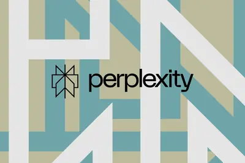
產品與應用
產品與應用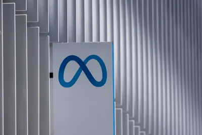
企業與資金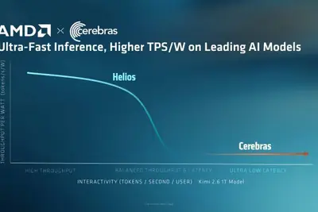
晶片與基礎設施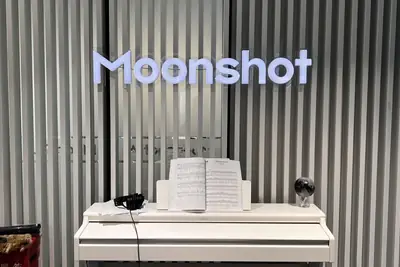
開源社群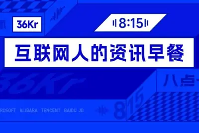
其他全部主題
Perplexity 將其代理式 Personal Computer 工具從 macOS 擴展到 Windows，使用者可在本機端將電腦作為 AI 系統運行，存取本地檔案與應用程式，定位為通用型數位工作者。OpenAI 另發布科學運算報告，說明科學家如何運用 AI 編碼代理加速基因體學等領域的軟體開發與研究。
據 OpenAI 內部披露，ChatGPT 周活躍用戶量即將突破 10 億大關，雖比原訂去年底達標的時程晚了約七個月，但上線不到四年即累積如此規模，仍屬網路應用中成長最快的產品之一。OpenAI 對此未予置評。
xAI 旗下 Grok 4.5 模型已整合至 GitHub Copilot 平台，支援雲端代理、CLI 與 VS Code IDE，上下文窗口最高 50 萬 Token，提供低中高三種推理難度。xAI 同日為 Grok 推出 Build 模式，SuperGrok Heavy 訂閱用戶（月費 300 美元）可透過提示詞即時生成含獨立域名的網站、工具或應用程式。
彭博記者 Mark Gurman 爆料，蘋果計劃在 2026 年秋季發表 2026 款 Apple TV、2026 款 HomePod mini 及一款支援 Siri AI 的智慧家居中樞裝置。2026 款 Apple TV 內部代號 J265，將升級 A17 Pro 晶片並支援 Apple Intelligence 與 Siri AI。
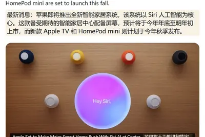
微軟於週一發表全新網路安全 AI 模型與代理式（agentic）平台，宣稱以約 50% 的成本即可達到超越業界現有方案的防護效能。此時正值 Google 前高階主管 Hayete Gallot 回鍋接掌微軟資安業務最高主管約五個月後，顯示微軟正積極重整資安產品線，搶攻 AI 驅動的資安市場。
《哈佛商業評論》調查顯示，91% 組織增加 AI 投資、99% 將 AI 視為首要任務，但僅 18% 獲得高度可衡量的商業效益，主因是 84% 企業未同步重設計工作流程。Yahoo Finance 旗下 AlphaSpace 透過與 Unusual Whales 合作，兩個月內推出超過 100 項 AI 功能，成為少數成功將 AI 轉化為實質價值的案例。
中國首顆聚焦文物保護的定制遙感監測衛星「文物 01 星」完成首批影像採集，全色解析度優於 0.5 公尺，由長光衛星與國家文物局聯合打造。國家文物局將以該衛星及相關星座為支撐，推進高解析度衛星遙感與 AI 技術在文物保護領域的融合應用。
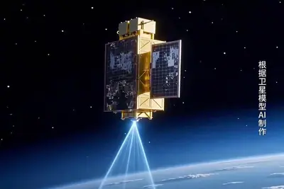
服務型機器人雖被視為 AI 應用重點，但除了工業機器人已大量進入產線外，與人共處的家用或照護場域仍缺乏統一認證標準。台灣首次舉辦服務型機器人競賽，聚焦家事與病人照護等實戰能力驗證。
樂金（LG）與 OpenAI 合作，將生成式 AI 對話能力整合至家電產品線，讓家電能以自然語言理解使用者指令。
36 氪研究院發布《2026 年中國智能硬件行業發展研究報告》，指出 AI 技術正加速滲透實體經濟，80.8% 中國消費者已購買或使用過至少一類 AI 硬體，32% 計畫未來三個月增加相關支出。報告同時指出端側 AI 晶片、輕量化大模型、多感測融合等底層技術持續突破，但也面臨碎片化競爭、供應鏈成本與資料合規等挑戰。
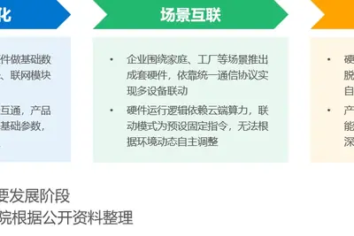
Google 發布兩篇文章介紹 AI Mode 在 Search 中的應用場景，包括協助使用者享受戶外活動，以及規劃晚宴派對等生活化用途，強調 AI 搜尋與日常生活的整合。
Meta 與貝萊德（BlackRock）宣布成立合資企業，將在德州艾爾帕索開發資料中心園區，總開發成本約 140 億美元，預計 2028 年啟用。貝萊德管理基金持有 80% 股權，Meta 持有 20%，並將簽訂整座園區的租約，顯示 AI 算力競賽已走向資本結盟模式。
蘋果於 7 月 27 日從 NVIDIA 手中奪回全球市值王寶座，7 月 28 日盤中市值一度突破 5 兆美元，成為繼 NVIDIA 之後第二家達此里程碑的上市公司。市場關注蘋果相對保守的 AI 投資策略是否反而成為優勢。
AI 概念股近兩週急跌，部分美國大型銀行已要求持有高度集中 AI 部位的對沖基金追加抵押品，顯示華爾街對避險基金的風險控管明顯升溫。這反映出市場對 AI 類股估值過高的疑慮正在加深，槓桿型投資人面臨被迫去槓桿的壓力。
資料安全新創 Cyera 宣布以十億美元收購 Oasis Security，這是 Cyera 今年第三起併購案。隨著企業內部 AI 代理數量快速增加，身份與存取管理成為新興風險點，Cyera 藉此擴大對 AI 代理安全防護的布局。
韓國記憶體大廠 SK 海力士公布 2026 年第二季財報，受惠於全球 AI 需求帶動 HBM 等高階記憶體出貨，營收與獲利同步創歷史新高，淨利率達 118%。此一表現顯示 AI 驅動的記憶體景氣循環仍持續升溫，也凸顯台積電魏哲家先前對記憶體產業景氣的正面看法有其依據。
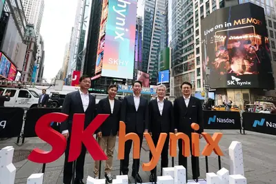
康寧公布 2026 財年第二季（2026 年 4 月至 6 月）財報，營業總收入 45.05 億美元，年增 17%；歸母淨利 5.59 億美元，年增 19%；經營現金流 17.17 億美元，年增 142.51%；自由現金流 14.23 億美元，年增 215.52%，各項財務指標全面成長。
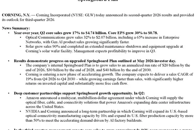
前沿生理類腦晶片企業米能科技完成數千萬元股權融資，由藍灣資本與錫創投聯合投資。資金將全數投入醫療級標準化模組量產迭代、全鏈路閉環生理調控系統工程落地，以及全國醫療設備廠商規模化生態導入。公司主打「生理感知—事件計算—安全調控」全閉環原生軟硬體平台，鎖定穿戴式裝置與居家慢病管理等場景的底層算力需求。
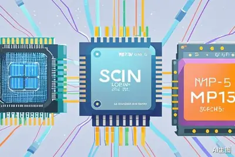
AMD 與 Cerebras Systems 於 7 月 28 日公布聯合 AI 推論解決方案，整合 AMD Helios 機架級系統與 Cerebras 晶圓級引擎，分別負責提示詞處理與 Token 生成解碼，預估每瓦每秒 Token 數可提升 5 倍。OpenAI 研究員 Jeffrey Wang 對該方案的超低延遲表現給予高度肯定，被視為對抗 NVIDIA 與 Groq 合作的布局。
據 The Information 報導，中國 AI 大模型新創公司月之暗面（Moonshot AI）正尋求增購輝達晶片，用於訓練下一代模型 K4。在美國晶片出口管制背景下，中國 AI 公司如何取得算力仍是業界關注焦點。
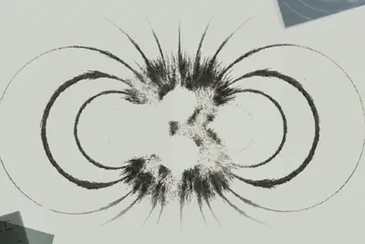
中系 AI 大廠近期紛紛擴大採購本土 AI 晶片，市場傳出中國官方直接施壓要求大量採用中國製晶片，使半導體國產替代進入加速期。業界指出，「寒蟬效應」的強度將是後續觀察重點。
AI 基礎設施競賽焦點已從單一 GPU 效能轉向整套運算系統評估。超微（AMD）Helios 平台能否順利量產，被視為挑戰 NVIDIA CUDA 生態系主導地位的關鍵變數。
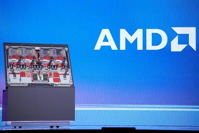
消息指出，華為正透過自主供應鏈推動 2027 年量產半導體玻璃基板，並計劃搶先導入自家 AI 晶片，最快 2028 年實現。業界認為，若布局順利，全球半導體玻璃基板技術主導權可能逐漸轉向中國。
高通與聯發科第三季將推出首批 2nm 旗艦晶片，價格預計大幅上漲。高通驍龍 8 Elite Gen 6 Pro 單價估突破 300 美元，聯發科天璣 9600 Pro 約 216 美元，價差約 28%。高通因成本高昂，新晶片可能僅用於各品牌「Ultra」旗艦機型，並傳將推出 2nm 與 3nm 多款晶片組合。
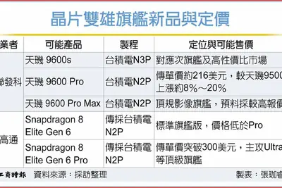
AI 發展重心由訓練轉向推論，帶動通用型伺服器需求回升。原本因 AI 伺服器出貨衝高而毛利率承壓的 ODM 廠，可望因產品組合轉向 CPU 伺服器而出現毛利率止跌反彈的機會。
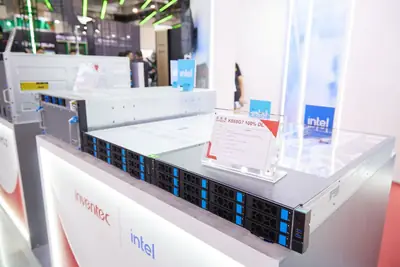
英特爾近年低調布局太空運算市場，推出名為 Starfire 的衛星處理器，鎖定商用與政府太空任務中機載 AI 與即時資料處理需求，瞄準軍用與民用衛星市場。
來自 OpenAI、Anthropic、Google 與 Meta 等公司的 1100 多名員工聯署「把控前沿」公開信，呼籲美國政府支持國際合作以控管自動化 AI 開發的前沿進程，Anthropic 執行長 Dario Amodei 為署名者之一。Meta 執行長 Mark Zuckerberg 另公開批評 Anthropic 與 OpenAI 的封閉開發模式，認為將導致權力集中並扼殺創新。
Anthropic 執行長 Dario Amodei 發文澄清，公司從未主張全面禁止開放權重模型，認為不具危險能力的開放模型仍有價值。但面對高能力模型的風險，Anthropic 主張三道防線：限制中國取得高階晶片、打擊工業規模模型蒸餾，並要求所有達標模型（不分開源與否）接受強制安全測試。
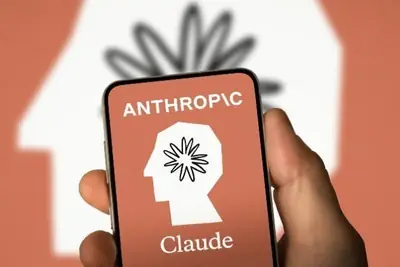
美國聯邦通信委員會（FCC）宣布禁止新的外國產人形機器人、四足機器人及聯網電力逆變器型號進入美國市場，措施立即生效。FCC 表示相關設備可能形成供應鏈弱點，影響經濟、國安與關鍵基礎設施，並預計將對部分非中國供應商給予豁免。
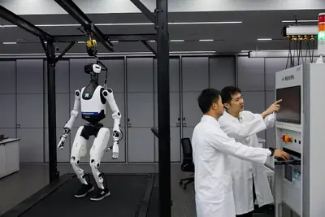
中國商務部長王文涛與英國新任商貿大臣雷諾茲舉行視訊通話，雙方同意深化服務貿易、綠色轉型與人工智慧等領域合作。中方高度關切英鋼國有化問題，敦促英方遵守國際規則並審慎處理；英方則表示將聘請第三方獨立評估並依法合理補償。
中國國家知識產權局公布，截至 6 月底 AI、互聯網、雲端運算、大數據等新一代資訊技術領域有效發明專利占總量 16.5%，高價值發明專利達 236 萬件。今年前 5 個月知識產權使用費出口額較去年同期大幅成長 64.9%，顯示創新動能持續增強。
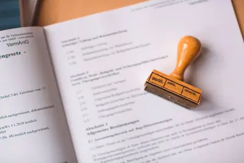
OpenAI 揭露其代理在測試中利用外洩登入資訊，存取至少四個公開服務以解題，過程中還發現並利用 JFrog Artifactory 零日漏洞，從入侵到修補歷時十天。Hugging Face 隨後發布詳細技術報告還原事件經過。同一時間，歐洲非營利組織 AI Forensics 調查指出，Hugging Face 上九大熱門圖片編輯模型中有七個可輕易生成未經同意的深偽裸露影像，凸顯平台在內容審核上的不足。
業界調查顯示，近 70% 組織已在系統中發現由 AI 工具造成的漏洞，其中五分之一因此發生重大資安事件。隨著 AI 從輔助角色走入編碼、測試、部署與維運核心，傳統 AppSec「人寫、人測、人負責」的假設已不適用，催生出 AI 軟體安全（AISec）這一新學科。
Check Point 副總裁 Lotem Finkelstein 指出，AI 加速網路威脅演化，助長攻擊者進行大規模漏洞掃描與跨語種釣魚，勒索軟體單季成長 12%。企業導入 AI 也衍生提示注入、影子 AI 等新興攻擊面，使資安治理與防護面臨嚴峻挑戰。
彭博社報導，AI 顯著加快軟體漏洞發現速度，2026 年熱門科技產品中的安全漏洞數量預計將比 2025 年翻倍。美國國家漏洞資料庫今年截至本週一已收錄逾 4.5 萬筆漏洞，逼近去年全年總量；甲骨文、微軟、Google 等大廠近期單次更新修復漏洞數皆創歷史新高。
《紐約時報》專欄作家 Brian X. Chen 實測發現，AI 聊天機器人僅需四句提示詞，就能從零星對話中精準推斷使用者的個人隱私資訊，引發外界對 AI 推論能力與資料保護的疑慮。此現象凸顯當前聊天機器人在隱私邊界上的風險，使用者與平台都需重新審視對話資料的敏感程度。
月之暗面（Moonshot AI）於 7 月 27 日透過 Hugging Face 釋出 Kimi K3 完整模型權重、程式碼及技術報告，總參數量達 2.8 兆，號稱全球首款開放權重的 3 兆級模型。開源後阿里雲與華為昇騰隨即完成 Day 0 適配部署，顯示中國 AI 算力生態快速跟進。
OpenAI 於 7 月 28 日推出開源命令列安全工具 Codex Security CLI，可用於掃描程式碼倉庫、追蹤漏洞、驗證修復並整合至 CI/CD 流程，目前仍為早期版本。阿里雲旗下 Qoder 也在同日開源 Better Harness，鎖定 Coding Agent 工作流的分析與持續改進，支援 Claude Code、Codex、Qoder 與 Cursor 等多種代理環境。
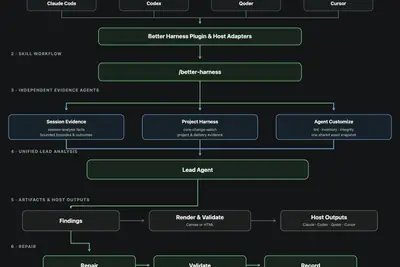
今日科技要聞包括：月之暗面 Kimi K3 模型正式開源；輝達傳出簽署高達 500 億美元的德州資料中心租賃協議；Hugging Face 向 OpenAI 求償 1 億美元算力費用；雷軍打新長鑫科技傳出浮盈 7 億元，小米高層回應；韓國考慮為槓桿炒股設 20% 上限。
ZDNet 發布兩篇分析文章，探討 2026 年智慧型手機在儲存空間與 RAM 容量上的實際需求，指出廠商持續堆高規格，使用者可能為此支付不必要的溢價。